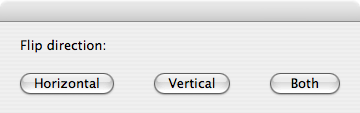

Manipulating Images
Altering images has become a common task in our digital world, and AppleScript can make manipulating groups of images a simple proceedure. The following section reviews each of the image manipulation commands in the Image Suite.
To manipulate an image, your scripts must contain the following steps:
- Start the Image Events application using the launch verb. Do not use the activate verb as the Image Events application has no user interface and runs invisibly.
- A file reference to the target image must be passed to the open command within an Image Events tell block. Doing so will load the image data from the image file. Once the image data has been successfully accessed, the script will return a reference to the opened image which can be stored in variable for use elsewhere in the script.
- Apply any manipulation commands to the image data.
- Save the altered data back into the source file or to another file.
- The image data is purged from memory by using the close command targeting the opened image data.
These steps are used in all of the script examples for image manipulation commands.
Flipping an Image
From the Image Events dictionary:
flip v : Flip an image
flip (reference) : the object for the command
[horizontal (boolean)] : flip horizontally
[vertical (boolean)] : flip vertically
The flip command is used to reverse the axis of an image. It has two options for the required parameter, horizontal for changing the axis of the image on a horizontal plane, and vertical for changing the axis of the image on a vertical plane. Here's an example:

set this_file to choose file
try
tell application "Image Events"
-- start the Image Events application
launch
-- open the image file
set this_image to open this_file
-- perform the manipulation
flip this_image with horizontal
-- save the changes
save this_image with icon
-- purge the open image data
close this_image
end tell
on error error_message
display dialog error_message
end try
You can even flip in both directions at the same time by including both parameters in the flip command:
flip this_image with horizontal and vertical
An image flipped using Image Events:
(L to R) normal, horizontal flip, vertical flip, both directions.
Here are a couple of things to note regarding the save command in the previous script:
First, the command takes an optional parameter of in, followed by a path, ether in HFS or POSIX format, to a file to be created. Since the in parameter was not used in the previous example, the script will save the altered image data back into the source image file. We'll examine the save command in detail later in this topic.
Second, the example script uses the optional icon parameter to indicate to Image Events to generate a new icon for the altered image file when it is saved. The icon will be a standard Mac OS X image icon.
Example Accepting User Input
 This script allows the user to choose the axis on which to flip the image:
This script allows the user to choose the axis on which to flip the image:

set this_file to choose file without invisibles
display dialog "Flip direction:" buttons {"Horizontal", "Vertical", "Both"}
set the flip_direction to the button returned of the result
try
tell application "Image Events"
-- start the Image Events application
launch
-- open the image file
set this_image to open this_file
-- perform the manipulation
if the flip_direction is "Horizontal" then
flip this_image with horizontal
else if the flip_direction is "Vertical" then
flip this_image with vertical
else
flip this_image with horizontal and vertical
end if
-- save the changes
save this_image with icon
-- purge the open image data
close this_image
end tell
on error error_message
display dialog error_message
end try